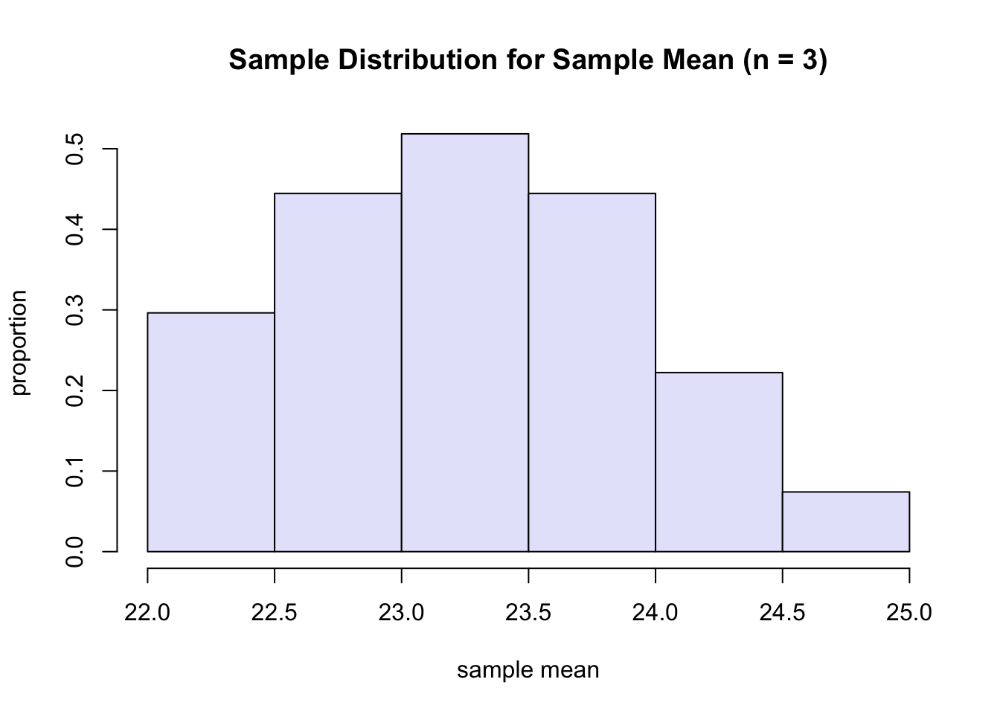
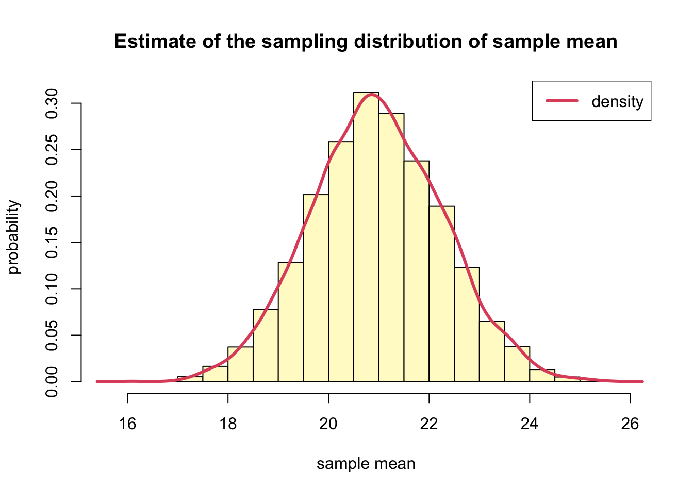
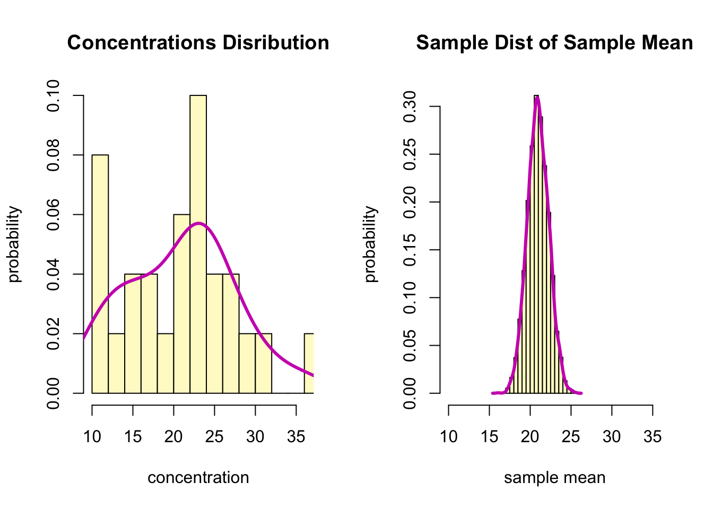
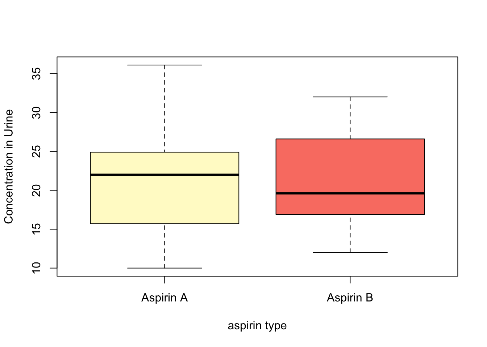
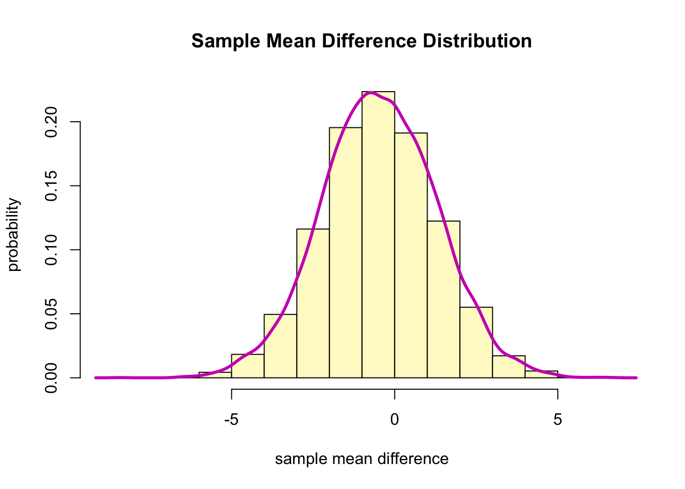

One method for assessing the bio availability of a drug is to note
its concentration in blood and/or urine samples at certain period of
time after the drug is given. Suppose we want to compare the
concentrations of two types of aspirin (Types A and B) in urine
specimens taken from the the same person 1 hour after she or he has
taken the drug. Hence, a specific dosage of either Type A or Type B
aspirin is given at one time and the 1-hour urine concentration is
measured. One week later, after the aspirin has presumably been cleared
from the system, the same dosage of the other aspirin is given to the
same person and the 1-hour urine concentration is noted. Because the
order of giving the drugs may affect the result, patients were
randomized to either take A first (then one week later B) or to take B
first (and then one week later A). This experiment was performed on 25
people. The data are found in a file called aspirin.csv.
Read the data into R and save in an object called
aspirinPharm.
aspirinPharm <- read.csv("./data/aspirin.csv")
head(aspirinPharm)## subjID Avals Bvals
## 1 s372 22.0 20.0
## 2 s268 24.9 16.1
## 3 s281 23.1 29.1
## 4 s328 10.0 12.8
## 5 s314 18.8 16.9
## 6 s384 36.1 18.0The column Avals contains the aspirin A 1-hour
concentration (mg%) and the column Bvals contains the
aspirin B 1-hour concentration (mg%). The column subjID is
the id number of the subject.
R function mean().Note if we did give aspirin A to the entire population and measured the concentrations in the urine, we would know the population mean value!
\[ \begin{array}{llll}\hline x_{1}^{*} & x_{2}^{*} & x_{3}^{*} & \bar{x}^{*} \\ \hline 22.0 & 22.0 & 22.0 & 22.0 \\ 22.0 & 22.0 & 24.9 & 23.0 \\ 22.0 & 22.0 & 23.1 & 22.4 \\ 22.0 & 24.9 & 22.0 & 23.0 \\ 22.0 & 24.9 & 24.9 & 23.9 \\ 22.0 & 24.9 & 23.1 & 23.3 \\ 22.0 & 23.1 & 22.0 & 22.4 \\ 22.0 & 23.1 & 24.9 & 23.3 \\ 22.0 & 23.1 & 23.1 & 22.7 \\ 24.9 & 22.0 & 22.0 & 23.0 \\ 24.9 & 22.0 & 24.9 & 23.9 \\ 24.9 & 22.0 & 23.1 & 23.3 \\ 24.9 & 24.9 & 22.0 & 23.9 \\ 24.9 & 24.9 & 24.9 & 24.9 \\ 24.9 & 24.9 & 23.1 & 24.3 \\ 24.9 & 23.1 & 22.0 & 23.3 \\ 24.9 & 23.1 & 23.1 & 23.7 \\ 24.9 & 23.1 & 24.9 & 24.3 \\ 23.1 & 22.0 & 22.0 & 22.4 \\ 23.1 & 22.0 & 24.9 & 23.3 \\ 23.1 & 22.0 & 23.1 & 22.7 \\ 23.1 & 24.9 & 22.0 & 23.3 \\ 23.1 & 24.9 & 24.9 & 24.3 \\ 23.1 & 24.9 & 23.1 & 23.7 \\ 23.1 & 23.1 & 22.0 & 22.7 \\ 23.1 & 23.1 & 24.9 & 23.7 \\ 23.1 & 23.1 & 23.1 & 23.1 \\ \hline\end{array} \]
R: the sampling distribution is based on a sample of
size 3.sample <- aspirinPharm$Avals[1:3] # c(22, 24.9, 23.1)
hist(xbarDist, freq=F, xlab="sample mean", ylab="proportion", main="Sample Distribution for Sample Mean (n = 3)", col="lavender", breaks = 6)
Bootstrap Idea
- The original sample approximates the population from which it is drawn.
- Resamples from this sample approximate what we would get if we took many samples from the population.
- The bootstrap distribution of a statistic, based on many resamples, approximates the sampling distribution of the statistic, based on many samples.
Bootstrap for a Single Population
- Given a sample of size \(n\) from a population.
- <1> Draw a resample of size \(n\) with replacement from the sample. Compute a statistic that describes the sample such as the sample mean.
- <2> Repeat the resampling process many times, say between 5000 and 10000.
- <3> Construct the bootstrap distribution of the statistic. Inspect its spread, bias, and shape.
For our example, we would estimate the mean urine concentration 1-hour after ingesting aspirin A using the sample mean, 20.9. In addition to the point estimate, we would like a 90% confidence interval. Since we do not know the sample distribution for the sample mean, we will do a bootstrap. Specifically, we will estimate the sampling distribution for the sample mean based on \(B=7500\) bootstrapped samples.
B <- 7500
n <- length(aspirinPharm$Avals)
xbar <- replicate(B,
{
x <- sample(aspirinPharm$Avals, size = n, replace = T)
mean(x)
}
)hist(xbar, probability = T, breaks=20,
col="lemonchiffon",
xlab="sample mean",
ylab = "probability",
main = "Estimate of the sampling distribution of sample mean")
lines(density(xbar), col=2, lwd=3)
legend("topright", "density", col=2, lwd=3)
# mean
mean(xbar) %>% round(1)## [1] 21# standard deviation
sd(xbar) %>% round(2)## [1] 1.31par(mfrow = c(1,2))
hist(aspirinPharm$Avals, freq = F, breaks = 10,
xlim=c(min(aspirinPharm$Avals),
max(aspirinPharm$Avals)),
col="lemonchiffon",
xlab="concentration",
ylab = "probability",
main = "Concentrations Disribution")
lines(density(aspirinPharm$Avals), col=6, lwd=3)
hist(xbar, probability = T, breaks=20,
xlim=c(min(aspirinPharm$Avals),
max(aspirinPharm$Avals)),
col="lemonchiffon",
xlab="sample mean",
ylab = "probability",
main = "Sample Dist of Sample Mean")
lines(density(xbar), col=6, lwd=3)
- The sample mean, \(\bar{x}\) gives an estimate of the true(population) mean \(\mu\), but its probability does not hit it exactly.
- Thus, it would be nice to have **a range of value for the \(\mu\) that we are 95% sure includes the true(population) mean, \(\mu\).
Bootstrap Percentile Confidence Intervals
- The interval between \(\alpha /2\) and \(1-\alpha/2\) quantiles of the bootstrap distribution of a statistic is a \((1-\alpha) \times 100\) bootstrap percentile confidence interval (CI) for the corresponding parameter.
# Bootstrap percentile confidence interval
(lb <- quantile(xbar, 0.05) %>% round(1)) #18.8## 5%
## 18.8(ub <- quantile(xbar, 0.95) %>% round(1)) #23.1## 95%
## 23.1# Point Estimate of the mean concentration level
mean(xbar) %>% round(1)## [1] 21# Mean of the original sample
mean(aspirinPharm$Avals) %>% round(1)## [1] 20.9boot() and
boot.ci()R function boot and boot.ci.
boot() to save the output and thenboot.ci() with the object created by
boot() called bootObjlibrary(boot)
xbarStats <- function(x, idx) {
return(c(mean(x[idx]), var(x[idx])))
}
(bootObj <- boot(aspirinPharm$Avals, xbarStats, 10000))##
## ORDINARY NONPARAMETRIC BOOTSTRAP
##
##
## Call:
## boot(data = aspirinPharm$Avals, statistic = xbarStats, R = 10000)
##
##
## Bootstrap Statistics :
## original bias std. error
## t1* 20.9320 -0.0087108 1.298596
## t2* 44.3556 -1.7618981 10.924173boot.ci().(aCI <- boot.ci(bootObj, conf = 0.9))## BOOTSTRAP CONFIDENCE INTERVAL CALCULATIONS
## Based on 10000 bootstrap replicates
##
## CALL :
## boot.ci(boot.out = bootObj, conf = 0.9)
##
## Intervals :
## Level Normal Basic Studentized
## 90% (18.80, 23.08 ) (18.78, 23.08 ) (18.69, 23.26 )
##
## Level Percentile BCa
## 90% (18.79, 23.09 ) (18.84, 23.13 )
## Calculations and Intervals on Original ScalePercentile confidence intervals.boot(), which we saved in bootObj.
boot.ci() and is 18.79 to 23.09.boxplot(list(aspirinPharm$Avals, aspirinPharm$Bvals),
ylab = "Concentration in Urine",
xlab = "aspirin type",
col = c("lemonchiffon","salmon"),
names=c("Aspirin A","Aspirin B"))
B <- 10000
n <- dim(aspirinPharm)[1]
diffs <- aspirinPharm$Avals - aspirinPharm$Bvals
boot.diff <- replicate(10000,
{
x <- sample(diffs, size = n, replace = T)
mean(x)
}
)hist(boot.diff, col = "lemonchiffon", freq = F,
xlab = "sample mean difference",
ylab = "probability",
main = "Sample Mean Difference Distribution")
lines(density(boot.diff), col=6, lwd=3)
mean(aspirinPharm$Avals - aspirinPharm$Bvals) %>% round(1)## [1] -0.5quantile() function from the bootstrapped sampling
distribution.(lb <- quantile(boot.diff, 0.025) %>% round(1))## 2.5%
## -3.9(ub <- quantile(boot.diff, 0.975) %>% round(1))## 97.5%
## 2.9boot() and
boot.ci()xbar.Diffs <- function(x, idx) {
return(c(mean(x[idx]), var(x[idx])))
}
(diffs.bootObj <- boot(diffs, xbar.Diffs, 10000))##
## ORDINARY NONPARAMETRIC BOOTSTRAP
##
##
## Call:
## boot(data = diffs, statistic = xbar.Diffs, R = 10000)
##
##
## Bootstrap Statistics :
## original bias std. error
## t1* -0.4680 0.0300408 1.76825
## t2* 81.6556 -3.5840770 23.71024# point estimate
diffs.bootObj$t0[1] %>% round(1)## [1] -0.5diffCI <- boot.ci(diffs.bootObj, conf = 0.95)
# Percentile method CI
diffCI$percent[4] %>% round(3)## [1] -3.896diffCI$percent[5] %>% round(3)## [1] 2.996